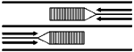

| ﺭﺍﻧﻨﺪﻩ ﻣﻲ ﺗﻮﺍﻧﺪ ﺑﻪ ﻣﻨﻈﻮﺭ ﺩﻭﺭ ﺯﺩﻥ ﻭ ﻳﺎ ﺳﺒﻘﺖ ﮔﺮﻓﺘﻦ ﺍﺯ ﺭﻭﻱ ﺁﻥ ﻋﺒﻮﺭ ﮐﻨﺪ | ﻓﻘﻂ ﺭﺍﻧﻨﺪﻩ ﻫﺎﻱ ﺍﺗﻮﻣﺒﻴﻞ ﺍﻭﻝ ﻭ ﺩﻭﻡ ﻣﻲ ﺗﻮﺍﻧﻨﺪ ﺑﻪ ﻣﻨﻈﻮﺭ ﺩﻭﺭ ﺯﺩﻥ ﻭ ﻳﺎ ﺳﺒﻘﺖ ﮔﺮﻓﺘﻦ ﺍﺯ ﺭﻭﻱ ﺁﻥ ﻋﺒﻮﺭ ﮐﻨﻨﺪ | ﺭﺍﻧﻨﺪﻩ ﺑﻪ ﻫﻴﭻ ﻭﺟﻪ ﻧﻤﻲ ﺗﻮﺍﻧﺪ ﺍﺯ ﺭﻭﻱ ﺁﻥ ﻋﺒﻮﺭ ﮐﻨﺪ | |||||||
| ﭘﺎﺭﮐﻴﻨﮓ ﺍﻓﻘﻴﺎﺳﺖ | ﭘﺎﺭﮐﻴﻨﮓ ﻋﻤﻮﺩﻱ ﺍﺳﺖ | ﭘﺎﺭﮐﻴﻨﮓ ﺍﻓﻘﻲ ﺍﺳﺖ | |||||||
|  | |||||||||
| ﺧﻄﮑﺸﻲ ﺩﺭ ﻭﺳﻂ ﺟﺎﺩﻩ ﻫﺎﻱ ﻋﺮﻳﻀﻲ ﮐﻪ ﻣﺎﻧﻊ ﻭﺳﻂ ﺟﺎﺩﻩ ﻭﺟﻮﺩ ﺩﺍﺭﺩ , ﻭﺳﺎﻳﻞ ﻧﻘﻠﻴﻪ ﺑﺎﻳﺪ ﺍﺯ ﺳﻤﺖ ﺭﺍﺳﺖ ﺟﺎﺩﻩ ﻋﺒﻮﺭ ﮐﻨﻨﺪ | ﺍﻳﻦ ﺧﻄﻮﻁ ﻋﺎﺑﺮ ﭘﻴﺎﺩﻩ ﺧﻮﺍﻧﺪﻩ ﻣﻲ ﺷﻮﺩ ﻭ ﺭﺍﻧﻨﺪﻩ ﺑﺎﻳﺪ ﭘﻴﺶ ﺍﺯ ﺭﺳﻴﺪﻥ ﺑﻪ ﺁﻥ ﺗﻮﻗﻒ ﮐﺎﻣﻞ ﻧﻤﻮﺩﻩ , ﺳﭙﺲ ﺑﺎ ﺭﻋﺎﻳﺖ ﺣﻖ ﺗﻘﺪﻡ ﻋﺒﻮﺭ ﻋﺎﺑﺮ ﭘﻴﺎﺩﻩ , ﺣﺮﮐﺖ ﮐﻨﺪ | ﺧﻂ ﮐﺸﻲ ﺩﺭ ﺟﺎﺩﻩ ﻫﺎﻱ ﻋﺮﻳﻀﻲ ﮐﻪ ﺑﺎﻳﺪ ﻭﺳﺎﻳﻞ ﻧﻘﻠﻴﻪ ﺩﺭ ﻳﮏ ﺟﻬﺖ ﺍﺯ ﺩﻭ ﻃﺮﻑ ﻣﺎﻧﻊ | |||||||